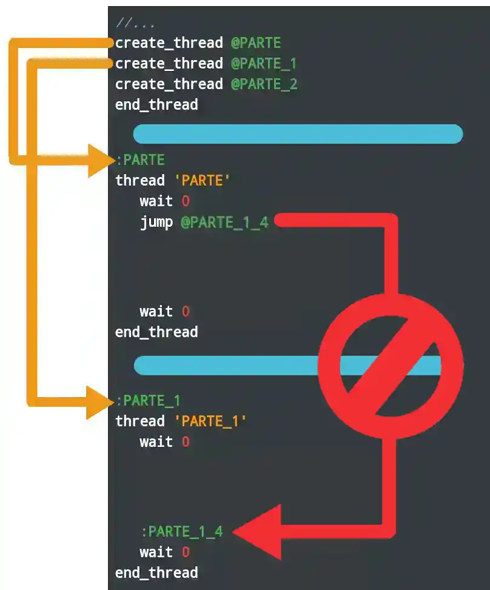
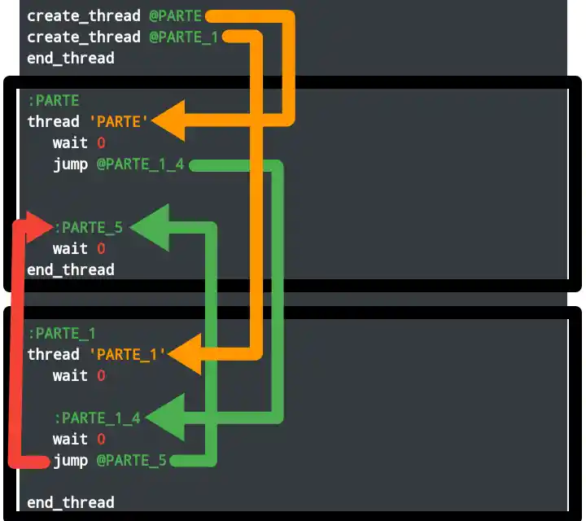

Antes aprendimos cómo iniciar un proceso.
.
¡Ahora aprendamos a ejecutar varios subprocesos al mismo tiempo! Aunque estoy seguro de que ya se dieron cuenta de que todos los subprocesos inician con create_thread.
Pero este comando se usa únicamente dentro de un
.scm.
Para un script personalizados, usa el opcode
0A92, o su comando:
.
```sb3
create_custom_thread
```
.
Puedes ver un vídeo tutorial de cómo usarlo, haciendo
click aquí.
¡Todos los saltos deben realizarse únicamente en su área(bloque) de flujo! Esto significa que no puede saltar a etiquetas ubicadas en otra ruta(bloque).
.
Aquí una foto de que no se puede hacer:
.

.
Así que recordemos: Cada parte solo se reconoce a sí mismo, solo hacen su trabajo. No les importan el resto de bloques, ni tampoco su trabajo. Solo actúan sobre el hilo en el que fue llamado. Técnicamente, estas bolas no debería abordar otros hilos.
.
Si la etiqueta para el salto está en otro hilo, pero el comando de salto vuelve al primero, ¡entonces no habrá error!
.

.
.
El caso es que Sanny Builder distribuye automáticamente las esferas de influencia, y con ellas las etiquetas que le pertenecen. Por lo tanto, la etiqueta :PARTE_1_4 se asignará automáticamente a la secuencia 'PARTE' incluso si está en el medio de la secuencia 'PARTE_1'.
IMPORTANTE: Puede llamar la misma bola muchas veces, incluso desde un subproceso, pero no al mismo tiempo. Es decir, mientras se ejecuta.
.
Aunque las bolas(bloques) se pueden pedir seguidas, hay un pequeño retraso entre las llamadas. Por lo tanto, debe tener cuidado al iniciar los hilos.
.
En general, si ejecutarán subprocesos simultáneamente, le aconsejo que no usen create_thread desde diferentes subprocesos, para evitar todos los posibles errores y fallas.